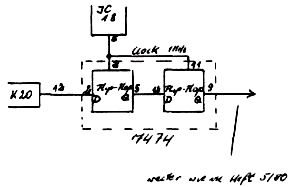

Nascom Journal |
6/80 7/80 |
Neuer Disassembler
für Nascom 1 und 2
Die Disassembler DIST4 und DISSYS sind speziell für den Nascom 1 und 2 ausgelegt.
Die Version DIST4 läuft mit dem T4-Betriebssystem, DISSYS läuft unter NAS-SYS .
Beide Versionen sind sehr kompakte 3 Pass-Disassembler, die in 2 EPROMS 2708 Platz finden.
Der Dreipass-Disassembler ist in der Lage, Marken (Labels) zu setzen. Zur besseren Lesbarkeit sind die Labels nicht willkürlich durchnummeriert: die angesprochenen Adressen sind Bestandteil des Labelnamens.
Neben anderen Befehlen kennt dieser Disassembler auch einen Relocator-Befehl, er bietet daher die Möglichkeit, Objektprogramme zu verschieben. Die aus dem Maschinencode zurückübersetzten Quellprogramme können in ZEAP-kompatibler Form auf Kassette ausgegeben werden oder mit einem Drucker aufgelistet werden.
Die Anzeige ist je nach Betriebsart in Druck- oder Bildschirmseiten organisiert.
Die Betriebsarten des Dissassemblers werden mittels Kommandobuchstaben aufgerufen.
Hier eine Übersicht über die einzelnen Kommandos:
- D
- disassembliert, Anzeige nur Bildschirm
- P
- disassembliert, Drucker und Bildschirm
- c
- erzeugt Quellfile auf Kassette
- Q
- setzt Verzögerung nach Zeilenende bei Kassette
- S
- definiert auszulassenden Speicherbereich (DEFS)
- R
- Relocator
- N
- Rückkehr in Monitor
Außerdem gibt es noch zwei Befehle, mit deren Hilfe man den Disassembler um eigene Unterprogramme erweitern kann.
Verbesserung zur „Simpel Graphik“
(Heft 5/80)
Im Gegensatz zu Herrn Lotter bin ich sehr wohl der Ansicht, daß sich die Invertierung des davorstehenden Zeichens bei gesetztem Bit 7 störend auswirkt.
Einfacher als druch Nachschalten von 8 ExOr Gattern läßt sich das Problem durch eine Verzögerung mit einem 7474 lösen, was sich in meinem System schon seit einiger Zelt bewährt hat.

Günter Böhm, _________________ ____
__ Karlsruhe __
Tel.: ____/______
| Leerkassetten |
|
|
|
Speziell geeignet für Datenaufzeichnung. Hochwertiges BASF-Band.
Cassette 5-fach verschraubt. Cassette C10,d.h. 10
Minuten Spieldauer, daher besonders geeignet für
Mikrorechnerprogramme. |
||
|
10 Stk 20 Stk 50 Stk 100 Stk |
19.80 36.00 87.50 160.00 |
Jede Kassette mit selbstklebendem Aufkleber zum Beschriften. |
| Bei: |
M K – Systemtechnik __________ __ ____ Germersheim/Rhein Tel.: _____/____ |
|
| Seite 5 von 52 |
|---|